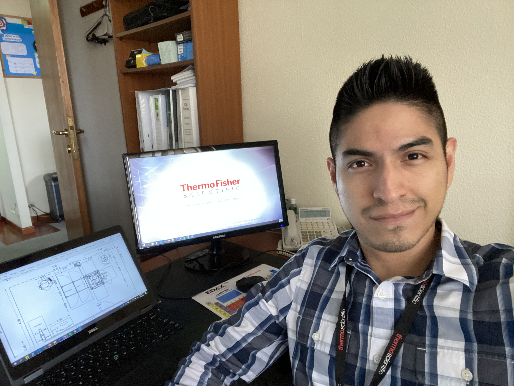

Arquitectura IoT & Telemetría
Diseño de arquitecturas para dispositivos, flujos de datos y protocolos de comunicación en proyectos de monitoreo, automatización y control distribuido.

Arquitecto de Soluciones IoT e Ingeniero de Hardware Embebido
Profesional en Ingeniería, Desarrollo y Sistemas con experiencia en entornos donde hardware, software y datos convergen: IoT, sistemas embebidos, cloud, IA aplicada y soporte técnico. Interesado en roles técnicos y de ingeniería donde pueda conectar dispositivos, infraestructura y negocio de forma práctica y medible.
Visión de sistemas, ingeniería aplicada y foco en resultados medibles.
He construido mi carrera a través de diversos entornos tecnológicos, contribuyendo a proyectos que combinan ingeniería, datos y arquitectura de sistemas en diferentes países y sectores.
Cada contexto ha sido una oportunidad para entender cómo la tecnología se adapta a distintas realidades operativas, regulatorias y culturales.
Esta experiencia internacional me permitió desarrollar una visión integrada de los sistemas — entendiendo que más allá del hardware o el software, lo que realmente importa es la comunicación entre ellos y su alineación con los objetivos del negocio.
A lo largo de mi carrera, he trabajado en entornos donde hardware, software y datos convergen, asegurando comunicación, estabilidad y escalabilidad a través de capas técnicas. Ese camino moldeó mi capacidad para pensar de manera sistémica y enfocarme en interoperabilidad y eficiencia.
Hoy, dirijo mi trabajo hacia soluciones que transforman información en decisiones y tecnología en resultados medibles — asegurando que cada implementación genere impacto operativo y valor sostenible.
Abierto a roles en Ingeniería, Desarrollo y Soporte Técnico de alto nivel.
Diseño de arquitecturas para dispositivos, flujos de datos y protocolos de comunicación en proyectos de monitoreo, automatización y control distribuido.
Selección de componentes, diseño de PCB, prototipado y firmware para ESP32, Raspberry Pi y microcontroladores.
Soluciones cloud ligeras para recibir telemetría, exponer APIs, integrar LLM y habilitar dashboards y servicios orientados a negocio.
FSR, SAD, ADR, diagramas de arquitectura y paquetes técnicos previos al desarrollo para facilitar el trabajo de equipos de ingeniería.
Integración de capas hardware y software: desde firmware y adquisición de datos hasta APIs, servicios backend, paneles web y automatización básica de despliegues.
Diagnóstico de problemas complejos en campo o remoto, mantenimiento de sistemas críticos, gestión de incidencias y apoyo de segundo nivel en entornos de alta exigencia.
Proyectos técnicos en areas de: IA, IoT, Analytics y Automatización.
Industria: Analítica de Seguros · Ingeniería de Datos · BI & Analytics Dashboard · Gobierno de Datos
Resumen: Plataforma integral de analítica de seguros que simula un portafolio asegurador realista de múltiples líneas, desde la generación de datos sintéticos hasta datasets listos para BI y dashboards ejecutivos. El proyecto cubre todo el ciclo de vida del dato: simulación basada en configuración, datos RAW operativos, normalización a esquema estrella, gobierno de base de datos y validación de KPIs mediante múltiples capas de HealthChecks.
Keywords: Analítica de Seguros · Ingeniería de Datos · Datos Sintéticos · Esquema Estrella · Calidad de Datos · HealthChecks · Validación de KPIs · BI · Simulación de Portafolio CLI · Validación de Datos · Modelado Dimensional · Diseño ETL/ELT
Tech Stack: Python · Pandas · NumPy · Supabase (PostgreSQL) · SQL · Looker Studio · VSCODE · Git/GitHub · Linux · CLI · Bash
Industria: Ingeniería de IA · Infraestructura Cloud · DevOps / MLOps
Resumen: Plataforma de chatbot de IA desplegada en Google Cloud Compute Engine, integrando OpenWebUI con la API de OpenRouter para trabajar con múltiples LLM bajo una interfaz unificada. Incluye VPC personalizada, VM Debian endurecida, Nginx como reverse proxy con TLS y stack contenerizado con Docker.
Keywords: Multi-LLM · OpenRouter · OpenWebUI · Google Cloud · Nginx Reverse Proxy · TLS/HTTPS · DevOps · Telemetría de logs · Cost Optimization · Infraestructura escalable
Tech Stack: Google Cloud Compute Engine · Debian · Docker · Nginx · Certbot/Let’s Encrypt · OpenWebUI · OpenRouter API · Firewall Hardening · Shell Scripts · WebSockets
Industria: Agrotech · Hidroponía Inteligente · IoT · Dispositos Edge · Cloud
Resumen: Arquitectura completa IoT/Edge/Cloud para automatizar sistemas Flood & Drain con nodos ESP32, backend contenerizado, telemetría MQTT, base de datos de series temporales y dashboard web de solo lectura. Incluye paquete técnico con FSR, SAD, catálogo de ADR y diagramas C4.
Keywords: IoT · Edge Computing · Hidroponía · MQTT · ESP32 · Telemetría en tiempo real · Zero Trust · Automatización agrícola · Arquitectura escalable · Documentación técnica
Tech Stack: ESP32 · MQTT · Fastify (backend) · Next.js (dashboard) · PostgreSQL · Docker Compose · WebSockets · Linux · ADRs · C4 Diagrams
Industria: Agrotech · Automatización · Sistemas Embebidos
Resumen: Desarrollo de un sistema automatizado para cultivos indoor con PCB personalizada basada en microcontrolador PIC, firmware en C para control de riego, iluminación, aireación y ambiente, además de una aplicación Android con GUI en tiempo real y comunicación Bluetooth personalizada.
Keywords: Embedded Systems · PCB Design · PIC Microcontroller · Bluetooth Telemetry · Android App · Indoor Farming · Control en tiempo real · Sensores · Actuadores · Firmware C
Tech Stack: Microcontrolador PIC · C · PCB personalizada · Android · Bluetooth · Sensores ambientales · Control de actuadores · Sistemas de riego · Real-time control · Protocolo propio
Tecnologías con las que trabajo con mayor comodidad.
C, Python, JavaScript, HTML5, CSS3, Bash, PowerShell.
ESP32, Raspberry Pi, Arduino, microcontroladores PIC, PlatformIO, herramientas EDA, diseño PCB.
AWS, Google Cloud, Oracle, Docker, Nginx, Git/GitHub, CI/CD, Linux Debian, WireGuard.
PostgreSQL, MySQL, MariaDB, SQLite, Redis, MongoDB, MQTT, Modbus, TCP/IP, LAN/WLAN, VPN.
OpenRouter, OpenWebUI, APIs de modelos, flujos multi-LLM, RAG básico, HuggingFace.
Jira, Trello, Notion, Figma, Canva, Adobe Illustrator, Postman, Cloudflare, Google Workspace, MS365.
Historial completo de roles en ingeniería, desarrollo y soporte técnico.
Brindar soporte IT bajo demanda y servicios de infraestructura para pequeñas y medianas empresas, oficinas y clientes individuales. Me encargo de diagnóstico de hardware y software, configuración de redes básicas y optimización de equipos y estaciones de trabajo. También ayudo a implementar soluciones cloud ligeras y prácticas para necesidades reales de pequeños negocios. Mantengo una relación directa con los usuarios, explicando soluciones de forma clara y orientada a la operación diaria.
Diseñé el plano arquitectónico para una solución agrícola basada en IoT, definiendo componentes del sistema, flujos de datos y puntos de integración para una futura implementación escalable.
Lideré la propuesta técnica y diseño arquitectónico para un sistema IoT de control de acceso vehicular integrado con la plataforma de peajes existente.
Desarrollé y mantuve sistemas de hardware embebido para controladores de estacionamiento inteligente, asegurando comunicación confiable y rendimiento en campo.
Lideré y coordiné las operaciones de soporte técnico para el sistema de control de estacionamientos PagoDirecto, gestionando actividades en campo, rediseño de hardware y soporte de ingeniería.
Brindé mantenimiento preventivo y correctivo para sistemas de microscopía electrónica (SEM/TEM) y equipos auxiliares, en clientes nacionales e internacionales.
Proporcioné mantenimiento preventivo y correctivo para computadoras y periféricos, diseñé redes LAN/WLAN para hogares y pequeñas oficinas y optimicé PCs de alto rendimiento para distintos usos.
Realicé mantenimiento de salas multimedia de videoconferencia en oficinas regionales y brindé soporte técnico a equipos audiovisuales corporativos.
Participé en el desarrollo de un prototipo de robot autónomo de transporte ligero, integrando prototipado de hardware y conceptos de programación embebida.
Pasantía orientada a investigación de tecnologías, selección de componentes y desarrollo de prototipos de sistemas embebidos.
Apoyé en la elaboración y organización de procedimientos operativos y manuales internos para diferentes departamentos, mejorando la claridad en los flujos de trabajo.
Formación complementaria relevante.
Disponible para oportunidades en Ingeniería, Desarrollo y roles técnicos de alto impacto.